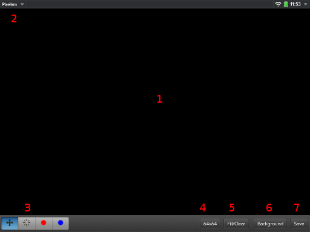
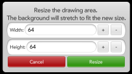
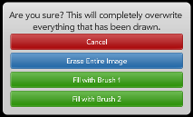
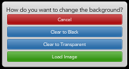
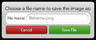
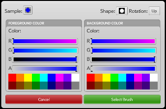
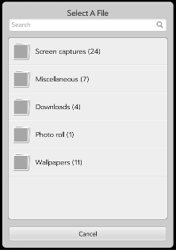
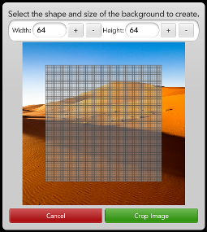

Pixelism is an art application that allows you to draw on pictures with colorful tiled shapes. In this help, these shapes will be referred to as“Pixels”.
App Layout and Controls

The Pixelism main window.
The Pixelism main window is comprised of a canvas that can be scrolled or drawn on and a toolbar that holds all of the app's tools and functions.
1. The Canvas
The canvas is the space on which the picture is drawn, and can be thought of as a grid of Pixels. When a draw tool or the erase tool is selected, then that operation is performed on any Pixels touched.
2. The App Menu
The app menu gives options to view this help screen or an "About" popup with information about the app and Phantom Hat.
3. The Toolbox
The Toolbox contains the tools you have to work with the displayed canvas and the Pixels within it.
The Move Tool
When the Move Tool is selected (has blue background), then the Canvas can be scrolled, allowing you to move around your image if the Canvas is larger than the displayable area.
The Erase Tool
The Erase Tool resets Pixels to their default transparent state, erasing anything that had been drawn in them and allowing the background image to show through.
The Brushes
The Brushes are what you use to actually draw on the Canvas. When a Brush is selected, tapping on the Canvas will draw a Pixel on the Canvas with the current brush settings. Press and hold on the tool to open a popup window to change the Brush's shape, rotation, and colors (see The Color Picker below).
4. The Resize Button

Resize Dialog
The Resize Button displays the current size of the Canvas in Pixels. Tapping on the button brings up the Resize Dialog, where you can change the size of the Canvas. Any background image will be stretched to fit the new size.
5. The Fill/Clear Button

Fill/Clear Dialog
The Fill/Clear button gives you options for automatically using the Eraser or a Brush on the entire image.
6. The Background Button

Background Dialog
The Background Dialog gives you options to change the background of the drawing canvas, i.e. what you are “drawing on”. You can have a transparent background, a black background, or a background made from an image on your TouchPad. See “Loading Images” below for information on loading images into Pixelism.
7. The Save Button

The Save Dialog
The Save Button lets you save your creations to your TouchPad's internal storage so that you can view and use the image in any other app. Pressing the button will cause the Save Dialog to appear. Enter a name for the image, and the Canvas contents will be saved to an image file.
The Color Picker

The Color Picker
The Color Picker appears when you hold down one of the Brushes for more than one second. At the top left is a sample of the resulting brush. At the top right are selectors for the shape to be drawn along with a direction to rotate the shape.
The middle of the dialog contains selectors for the Foreground and Background colors. The Foreground color is the color that replaces white in the shapes shown in the Shape Selector. The Background Color replaces black in the shape. Each color selector has sliders for the amount of Red, Green, and Blue in the color. The sliders will change color to demonstrate how they will affect the resulting color. Below the color sliders is an “Alpha Transparency” slider, which will affect how transparent the resulting color is. Below the sliders is a collection of color presets for commonly used colors.
Loading Images

The File Picker
When you choose “Load Image” from the Background menu, a file selector will appear. Use the listing to browse to the image file you want to load into Pixelism.

The Crop Image dialog
Once you have selected the image file to load, the Crop Image dialog will appear. Using this, you can select the region of the image to load as well as the number of Pixels you want the resulting canvas to have. To select a region of the image, drag the selection (the gray boxes) where you want them to be an use a “pinch” motion to resize the selection. If your selection is off of the image's area, the resulting area on the drawing canvas will be transparent.
We hope you enjoy Pixelism. If you make something awesome, need help, or have a recommendation for us, let us know! We can be found on Twitter as @PixelismApp. You can go to the Pixelism website or the Phantom Hat home page using the buttons below.